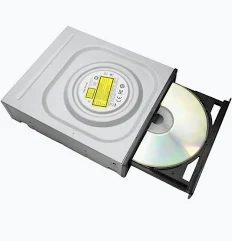
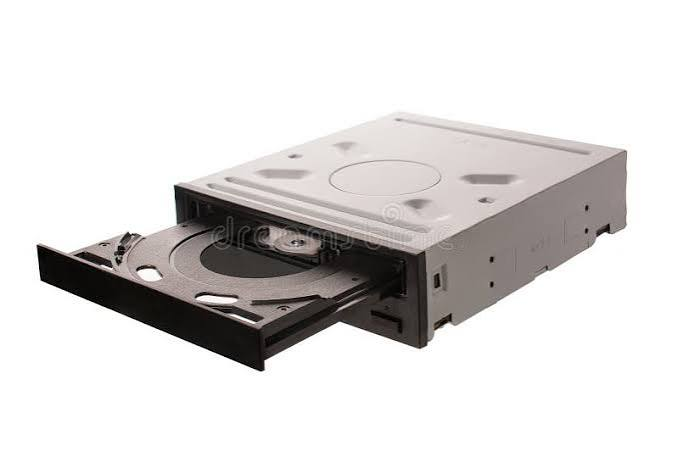
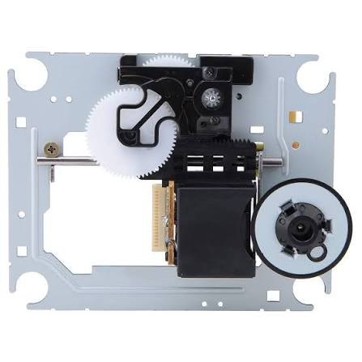
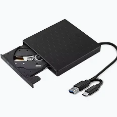

Napęd optyczny (Optical Disc Drive – ODD) umożliwia odczytywanie oraz nagrywanie danych na płytach optycznych za pomocą wiązki światła laserowego.
Przez wiele lat był wykorzystywany do odtwarzania filmów, muzyki, instalowania programów oraz uruchamiania gier komputerowych.
Napędy optyczne mogą być montowane wewnątrz obudowy komputera lub podłączane zewnętrznie przez port USB.


Napęd optyczny składa się między innymi z silnika obracającego płytę, lasera, soczewki oraz głowicy odczytującej dane. Posiada również mechanizm wysuwania i zamykania tacki.
Podczas pracy płyta obraca się z dużą prędkością, a laser kieruje wiązkę światła na jej powierzchnię. Odbite światło jest analizowane przez czujnik, który przekształca odczytane informacje na dane cyfrowe.
Napędy z funkcją nagrywania mogą zapisywać informacje na specjalnych płytach CD-R, DVD-R lub BD-R. Proces polega na zmianie właściwości warstwy zapisu za pomocą lasera.


Płyty CD mają zazwyczaj pojemność około 700 MB. Były powszechnie wykorzystywane do przechowywania muzyki, zdjęć i niewielkich programów.
Standardowa płyta DVD mieści 4,7 GB danych, a wersja dwuwarstwowa 8,5 GB. Wykorzystywano ją głównie do filmów i gier.
Płyty Blu-ray oferują znacznie większą pojemność. Standardowa płyta jednowarstwowa mieści 25 GB, a dwuwarstwowa 50 GB. Są wykorzystywane między innymi do filmów w wysokiej rozdzielczości.
W przeszłości napędy optyczne były standardowym wyposażeniem większości komputerów. Obecnie coraz częściej rezygnuje się z nich na rzecz pendrive'ów, dysków SSD oraz pobierania plików przez Internet.
Mimo spadku popularności nadal są przydatne do odczytywania starszych płyt, archiwizowania danych oraz odtwarzania filmów i muzyki.
Technologia Blu-ray wykorzystuje niebiesko-fioletowy laser o krótszej długości fali niż laser stosowany w napędach CD i DVD. Dzięki temu możliwe jest zapisanie większej ilości danych na podobnej powierzchni płyty.